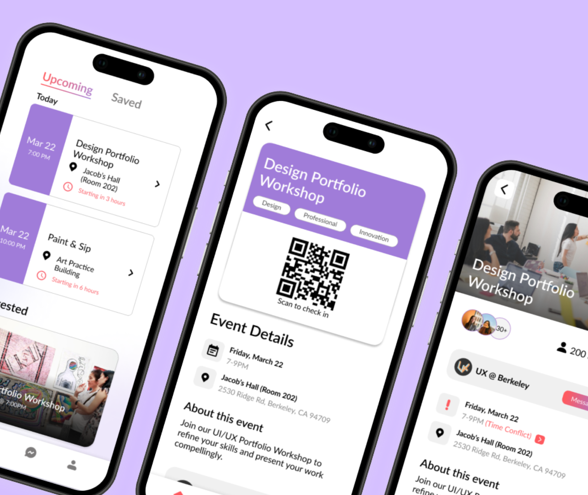
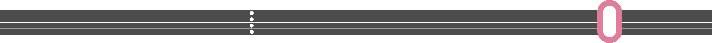
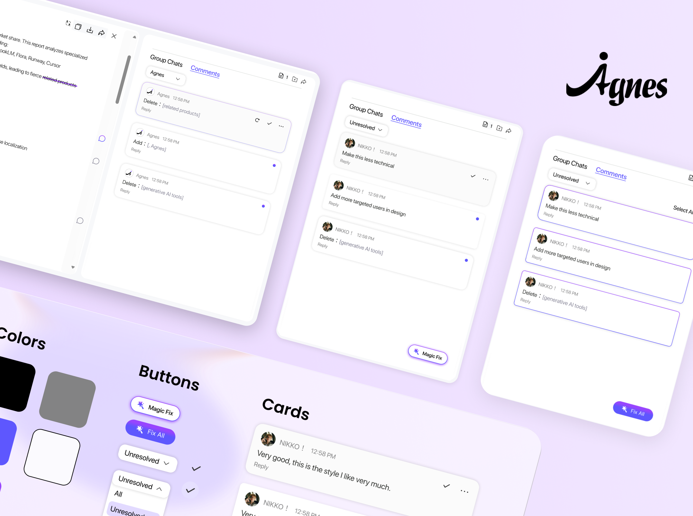
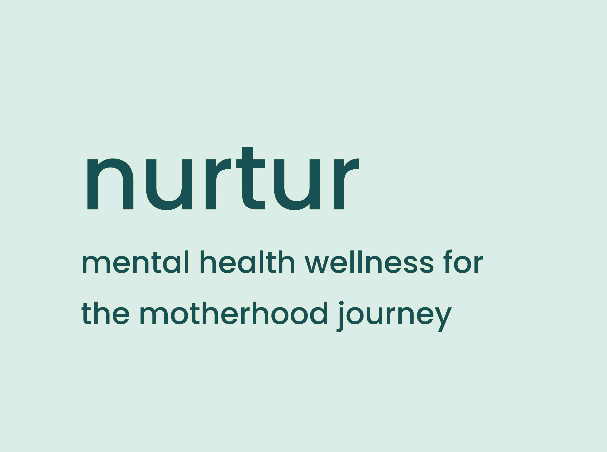
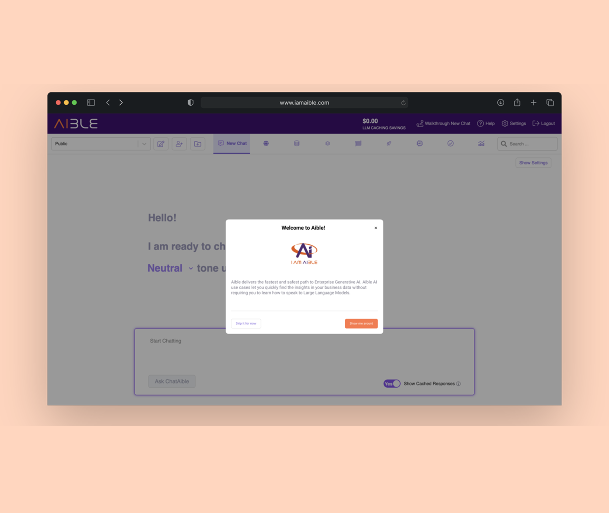
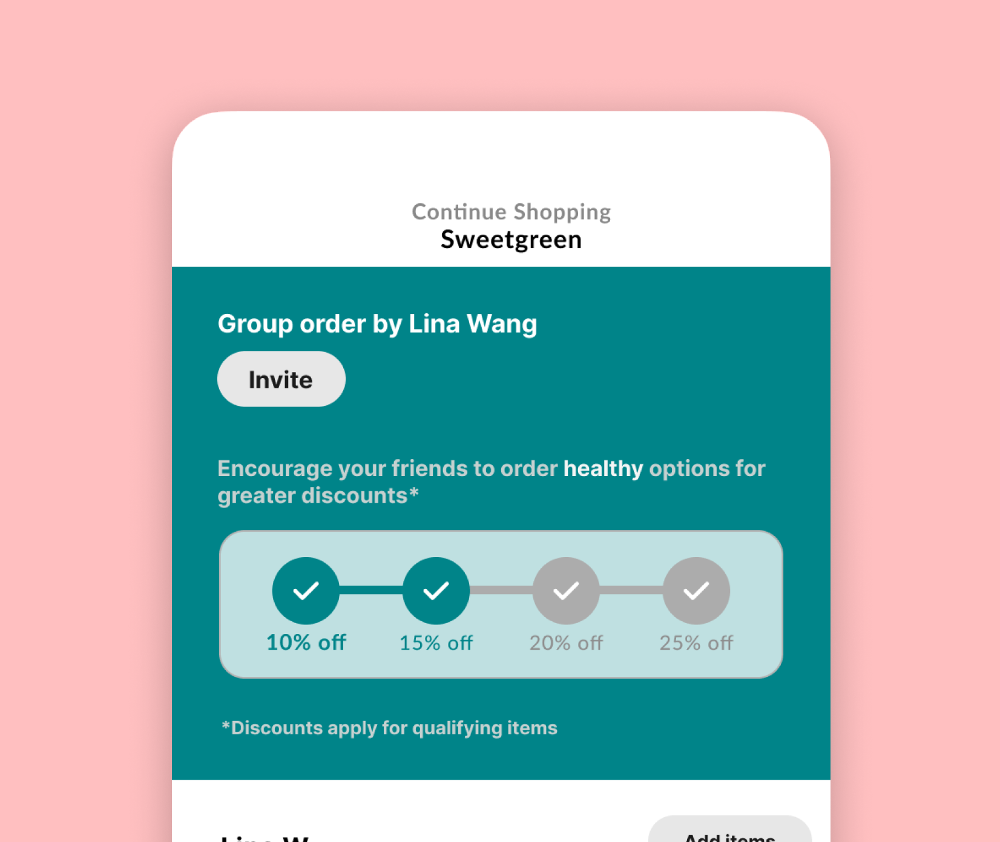
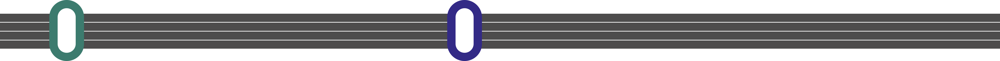
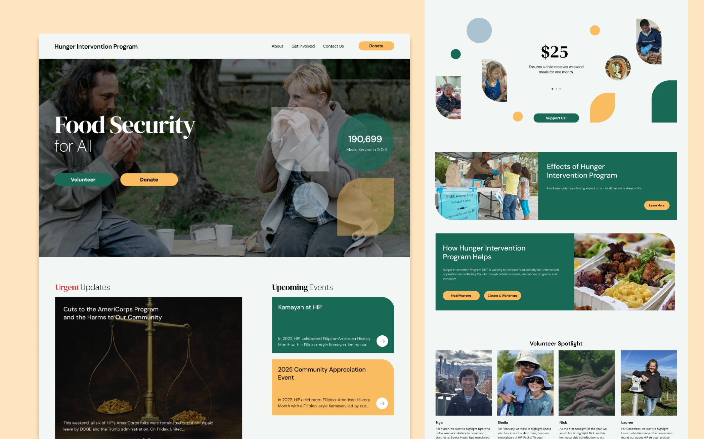
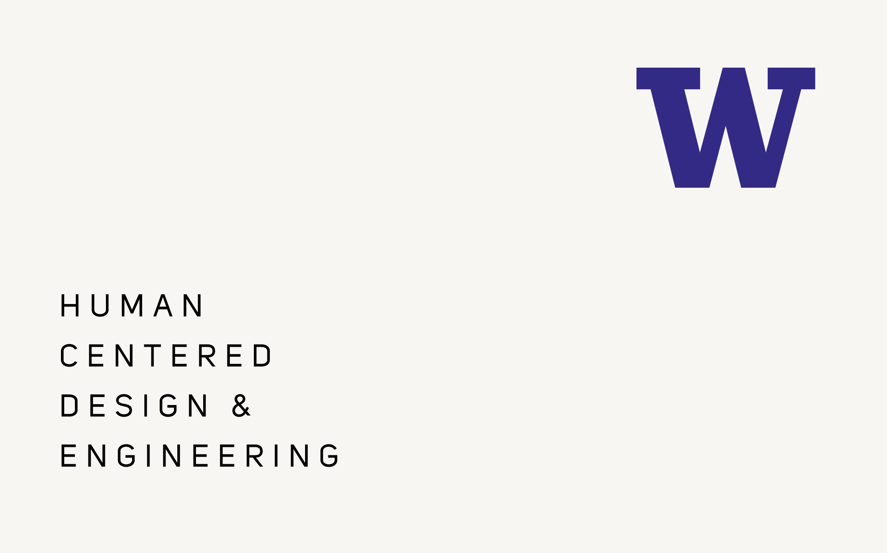

Bearhub
The challenge is to design “BearHub”, a platform that addresses the diverse needs of Berkeley students by facilitating discovery of resources and events.


30k to 60k growth
users use AI Design

This project enhanced collaboration in the Agnes generative AI platform by making the “one‑click resolve” feature more visible and adding a centralized comment tab to give users intuitive control over AI‑powered edits.


nurtur is a mobile application designed to support new mothers and their care networks during the postpartum period. The app focuses on mental health awareness and prevention through digital tools and professional resources.

The challenge is to design “BearHub”, a platform that addresses the diverse needs of Berkeley students by facilitating discovery of resources and events.

UX research for ChatAible, a generative AI tool for enterprises, using interviews, cognitive walkthroughs, and usability testing.

UX design project for DoorDash X Adobe Designathon to help college students make healthier meal choices, using enhanced filters, health-focused displays, and group discounts with nutritional rewards.


A comprehensive website redesign for the Hunger Intervention Program, thoughtfully crafting a cohesive design system and high-fidelity prototype that authentically reflects the organization's mission and resonates with its diverse audiences.

A human-centered design journey investigating privacy and surveillance concerns for young travelers. We conducted thoughtful user interviews to understand their experiences and are currently crafting both digital and physical solutions to address their needs.